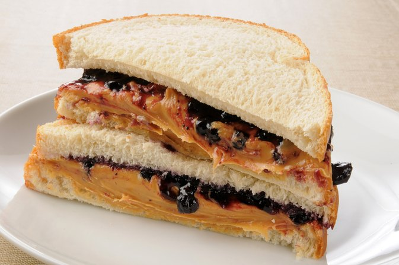

Peanut Butter & Jelly Sandwich

Description
A peanut butter and jelly sandwich (PB&J) consists of peanut butter and fruit preserves—jelly—spread on bread. The sandwich may be open-faced, made of a single slice of bread folded over, or made using two slices of bread. The sandwich is popular in the United States, especially among children; a 2002 survey showed the average American will eat 1,500 peanut butter and jelly sandwiches before graduating from high school. There are many variations of the sandwich, starting with the basic peanut butter sandwich or jam sandwich.
Ingredients
- 2 teaspoons butter
- 2 slices white bread
- 2 teaspoons any flavor fruit jelly
- 1 teaspoon peanut butter
Steps
- Heat a griddle or skillet to 350 degrees F (175 degrees C).
- Spread butter on one side of each slice of bread. Spread jelly on the unbuttered side of one slice of bread; spread peanut butter on the other unbuttered side. Place bread slices together, so peanut butter and jelly are in the middle.
- Cook on the preheated griddle until golden brown and heated through, about 4 minutes per side.